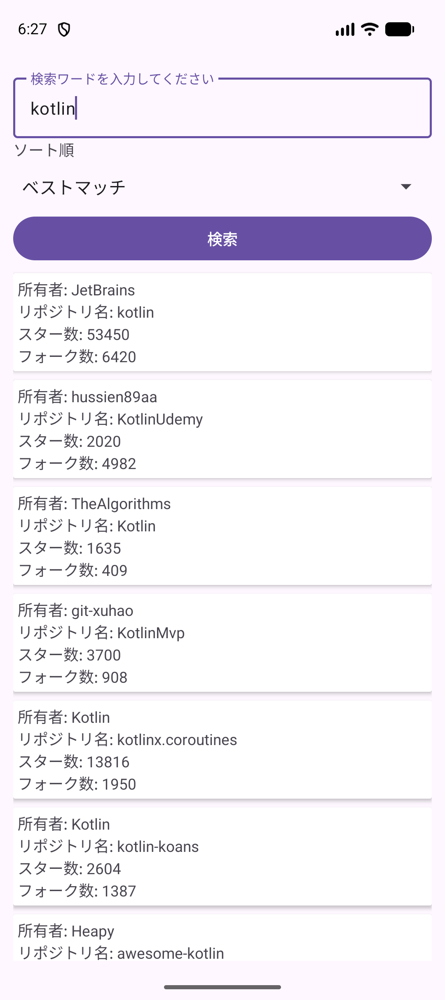
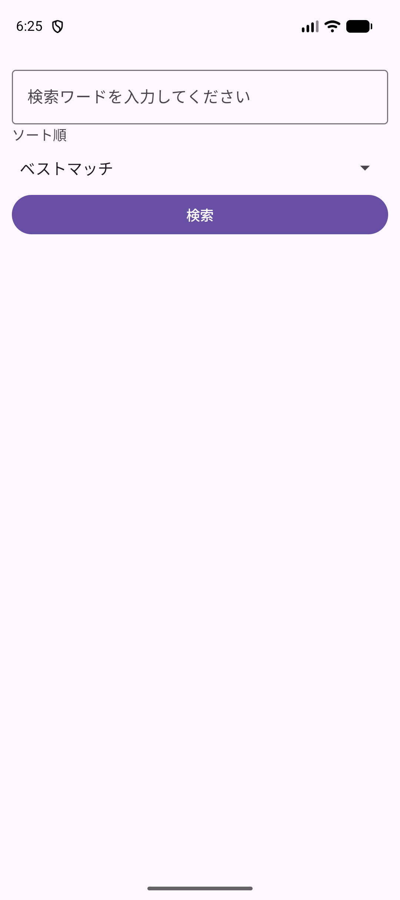
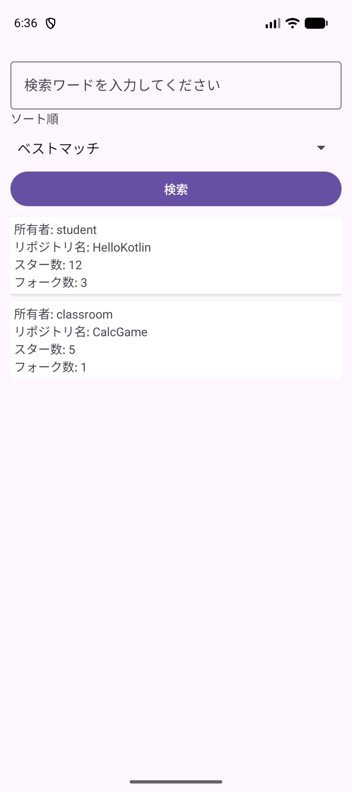

KOTLIN PROGRAMMING EXERCISES / A03
GitHubのリポジトリを
検索しよう
検索語を送り、届いたJSONをKotlinのデータに変え、一覧に表示します。
対象：A03GithubSearch / パッケージ：jp.ac.jec.a03githubsearch
11〜13コマ目・各90分 / Android Studio Panda 2 / macOS
この単元で作るもの
ソート順を選べるGitHub検索アプリ。自分のプロジェクトへ順に書き足し、12コマ目に固定データ、13コマ目に通信の結果を同じ一覧へ表示します。
完成する検索画面を確認する
この単元では A03GithubSearch を作ります。Android Studio Panda 2 を開き、Welcome画面で版を確認します。違う版なら、作成前に先生に画面を見せます。ブラウザにはこの教科書を開いておきます。比較欄のJava／Swiftは読むためのコードで、Kotlinファイルには貼りません。
検索語と並び順を選び、GitHubの公開リポジトリを一覧にするアプリです。行には所有者・リポジトリ名・スター数・フォーク数が出ます。行を押しても別の画面には移動しません。11コマ目は入力画面、12コマ目は通信しない2件の見本、13コマ目は実際の検索へ進みます。

Java／Swiftとの比較
Kotlin
override fun onCreate(savedInstanceState: Bundle?) {
super.onCreate(savedInstanceState)
}Java
@Override
protected void onCreate(Bundle savedInstanceState) {
super.onCreate(savedInstanceState);
}POINT
Androidが画面の準備時に onCreate を呼びます。Kotlinの override はJavaのオーバーライドに対応します。今回は main を作りません。
ここで止まって確認
できたらチェックします。止まったときは、この画面を先生に見せましょう。
自分のプロジェクトを作る
- New Project、または File → New → New Project… を選びます。
- Phone and Tablet → Empty Views Activity → Next を選びます。
Empty ActivityはCompose用です。 - 次の表を入力して Finish。Gradle同期が終わるまで待ちます。
| 項目 | 入力・選択 |
|---|---|
| Name | A03GithubSearch |
| Package name | jp.ac.jec.a03githubsearch |
| Save location | /Users/ユーザ名/Documents/Kotlin/A03GithubSearch |
| Language | Kotlin |
| Minimum SDK | API 31（Android 12） |
| Build configuration language | Kotlin DSL (build.gradle.kts) |
ユーザ名 は自分のMacの名前に置き換えます。Save locationはプロジェクト名まで含めます。書類へのアクセスを聞かれたら自分の保存先を読むために許可します。同期の赤いエラーが消えないときは先生に画面を見せます。
左のProjectツールウィンドウは Project 表示にします。Kotlinファイルの置き場は app/src/main/java/jp/ac/jec/a03githubsearch/。以後この教科書で「パッケージ」と書いたら、この場所です。
Java／Swiftとの比較
Kotlin
class MainActivity : AppCompatActivity()Java
public class MainActivity extends AppCompatActivity {
}POINT
継承はJavaの extends に対してKotlinは :。AppCompatActivity() の括弧は親のコンストラクタを呼ぶ部分です。
ここで止まって確認
できたらチェックします。止まったときは、この画面を先生に見せましょう。
通信と一覧に使う設定をそろえる
Panda 2でも作成日によってライブラリの版が変わります。次の3つの設定ファイルを全文置換してから同期します。build.gradle.kts は2か所にあるので、パスを確認します。別の版で生成した構成に、AGP番号だけを下げて適用しないでください。
最初は gradle/libs.versions.toml。Ktorは通信、serializationはJSON変換、RecyclerViewとCardViewは一覧、lifecycleは画面に結び付いた通信開始に使います。
[versions]
agp = "9.1.1"
kotlin = "2.4.20"
coreKtx = "1.17.0"
junit = "4.13.2"
junitVersion = "1.3.0"
espressoCore = "3.7.0"
appcompat = "1.8.0"
material = "1.14.0"
activity = "1.13.0"
constraintlayout = "2.2.2"
recyclerview = "1.4.0"
cardview = "1.0.0"
lifecycle = "2.9.4"
ktor = "3.2.3"
[libraries]
androidx-core-ktx = { group = "androidx.core", name = "core-ktx", version.ref = "coreKtx" }
junit = { group = "junit", name = "junit", version.ref = "junit" }
androidx-junit = { group = "androidx.test.ext", name = "junit", version.ref = "junitVersion" }
androidx-espresso-core = { group = "androidx.test.espresso", name = "espresso-core", version.ref = "espressoCore" }
androidx-appcompat = { group = "androidx.appcompat", name = "appcompat", version.ref = "appcompat" }
material = { group = "com.google.android.material", name = "material", version.ref = "material" }
androidx-activity = { group = "androidx.activity", name = "activity", version.ref = "activity" }
androidx-constraintlayout = { group = "androidx.constraintlayout", name = "constraintlayout", version.ref = "constraintlayout" }
androidx-recyclerview = { group = "androidx.recyclerview", name = "recyclerview", version.ref = "recyclerview" }
androidx-cardview = { group = "androidx.cardview", name = "cardview", version.ref = "cardview" }
androidx-lifecycle-runtime-ktx = { group = "androidx.lifecycle", name = "lifecycle-runtime-ktx", version.ref = "lifecycle" }
ktor-client-content-negotiation = { module = "io.ktor:ktor-client-content-negotiation", version.ref = "ktor" }
ktor-client-core = { module = "io.ktor:ktor-client-core", version.ref = "ktor" }
ktor-client-okhttp = { module = "io.ktor:ktor-client-okhttp", version.ref = "ktor" }
ktor-serialization-kotlinx-json = { module = "io.ktor:ktor-serialization-kotlinx-json", version.ref = "ktor" }
[plugins]
android-application = { id = "com.android.application", version.ref = "agp" }
kotlinxSerialization = { id = "org.jetbrains.kotlin.plugin.serialization", version.ref = "kotlin" }次はプロジェクト直下の build.gradle.kts。
// Top-level build file where you can add configuration options common to all sub-projects/modules.
plugins {
alias(libs.plugins.android.application) apply false
alias(libs.plugins.kotlinxSerialization) apply false
}次は app/build.gradle.kts。ここでserializationプラグインと使うライブラリを有効にします。
plugins {
alias(libs.plugins.android.application)
alias(libs.plugins.kotlinxSerialization)
}
android {
namespace = "jp.ac.jec.a03githubsearch"
compileSdk {
version = release(36) {
minorApiLevel = 1
}
}
defaultConfig {
applicationId = "jp.ac.jec.a03githubsearch"
minSdk = 31
targetSdk = 36
versionCode = 1
versionName = "1.0"
testInstrumentationRunner = "androidx.test.runner.AndroidJUnitRunner"
}
buildTypes {
release {
isMinifyEnabled = false
proguardFiles(
getDefaultProguardFile("proguard-android-optimize.txt"),
"proguard-rules.pro"
)
}
}
compileOptions {
sourceCompatibility = JavaVersion.VERSION_11
targetCompatibility = JavaVersion.VERSION_11
}
}
dependencies {
implementation(libs.androidx.activity)
implementation(libs.androidx.appcompat)
implementation(libs.androidx.constraintlayout)
implementation(libs.androidx.recyclerview)
implementation(libs.androidx.cardview)
implementation(libs.androidx.lifecycle.runtime.ktx)
implementation(libs.androidx.core.ktx)
implementation(libs.material)
testImplementation(libs.junit)
androidTestImplementation(libs.androidx.espresso.core)
androidTestImplementation(libs.androidx.junit)
// Kotlin Multiplatformのアプリ用テンプレートプロジェクトのktor依存関係を参考にした
// https://github.com/Kotlin/KMP-App-Template/blob/main/composeApp/build.gradle.kts#L52-L54
// https://github.com/Kotlin/KMP-App-Template/blob/main/composeApp/build.gradle.kts#L35
implementation(libs.ktor.client.okhttp)
implementation(libs.ktor.client.core)
implementation(libs.ktor.client.content.negotiation)
implementation(libs.ktor.serialization.kotlinx.json)
}Sync Now、出なければ File → Sync Project with Gradle Files を選び、赤いエラーが消えるまで待ちます。AGP 9.1.1はKotlinのビルド機能を内蔵しているので、別の org.jetbrains.kotlin.android は足しません。カタログの kotlin はここではserializationプラグインの版です。
続けて app/src/main/AndroidManifest.xml を全文置換します。INTERNET は application の外側、windowSoftInputMode は activity の属性です。通信のための実行時の許可ダイアログは出ません。
<?xml version="1.0" encoding="utf-8"?>
<manifest xmlns:android="http://schemas.android.com/apk/res/android"
xmlns:tools="http://schemas.android.com/tools">
<uses-permission android:name="android.permission.INTERNET" />
<application
android:allowBackup="true"
android:dataExtractionRules="@xml/data_extraction_rules"
android:fullBackupContent="@xml/backup_rules"
android:icon="@mipmap/ic_launcher"
android:label="@string/app_name"
android:roundIcon="@mipmap/ic_launcher_round"
android:supportsRtl="true"
android:theme="@style/Theme.A03GithubSearch">
<activity
android:name=".MainActivity"
android:exported="true"
android:windowSoftInputMode="adjustResize">
<intent-filter>
<action android:name="android.intent.action.MAIN" />
<category android:name="android.intent.category.LAUNCHER" />
</intent-filter>
</activity>
</application>
</manifest>Java／Swiftとの比較
Kotlin
@Serializable
data class Owner(val login: String)Swift
struct Owner: Codable {
let login: String
}POINT
次のコマで使う @Serializable は、Swiftの Codable と同じくJSON変換に使います。その変換処理を生成できるように、今回はライブラリだけでなくプラグインも設定します。
ここで止まって確認
できたらチェックします。止まったときは、この画面を先生に見せましょう。
検索画面をXMLで作る
- Tools → Device Manager で
jec_25cm_kotlin_Pixel 9aを起動します。既にある端末を使います。 - なければ ＋ → Create Virtual Device（または Create Device）から Phone → Pixel 9a。先生指定のAPI 31以上のイメージで作成し、このAVD名にします。Apple Siliconは
arm64-v8a、Intel Macはx86_64。候補がなければ先生に画面を見せます。 - 実行設定 app と指定AVDで Run ▶。まず
Hello World!を確認します。 app/src/main/res/layout/activity_main.xmlを開き、右上の Code で全文を置き換えます。
<?xml version="1.0" encoding="utf-8"?>
<FrameLayout xmlns:android="http://schemas.android.com/apk/res/android"
xmlns:tools="http://schemas.android.com/tools"
android:id="@+id/main"
android:layout_width="match_parent"
android:layout_height="match_parent"
tools:context=".MainActivity">
<!-- メインコンテンツ-->
<LinearLayout
android:layout_width="match_parent"
android:layout_height="wrap_content"
android:orientation="vertical"
android:padding="12dp">
<com.google.android.material.textfield.TextInputLayout
android:id="@+id/text_input_layout_query"
style="@style/Widget.Material3.TextInputLayout.OutlinedBox"
android:layout_width="match_parent"
android:layout_height="wrap_content">
<com.google.android.material.textfield.TextInputEditText
android:id="@+id/edit_query"
android:layout_width="match_parent"
android:layout_height="wrap_content"
android:hint="検索ワードを入力してください"
android:maxLines="1"
android:minHeight="48dp" />
</com.google.android.material.textfield.TextInputLayout>
<TextView
android:layout_width="match_parent"
android:layout_height="wrap_content"
android:text="ソート順" />
<Spinner
android:id="@+id/sp_sort"
android:layout_width="match_parent"
android:layout_height="wrap_content"
android:minHeight="48dp" />
<Button
android:id="@+id/btn_search"
android:layout_width="match_parent"
android:layout_height="wrap_content"
android:text="検索" />
<androidx.recyclerview.widget.RecyclerView
android:id="@+id/recycler_view"
android:layout_width="match_parent"
android:layout_height="match_parent" />
</LinearLayout>
<com.google.android.material.progressindicator.CircularProgressIndicator
android:id="@+id/progress"
android:layout_width="wrap_content"
android:layout_height="wrap_content"
android:layout_gravity="center"
android:indeterminate="true"
android:visibility="invisible" />
</FrameLayout>外側の FrameLayout は、入力と一覧の上に通信中の印を重ねるための配置です。内側の LinearLayout は縦並び。progress は最初 invisible なので見えません。main のidは生成されたインセット処理が使うため残します。
Runすると入力欄・「ソート順」・検索ボタンが出ます。まだSpinnerの選択肢も検索処理も書いていないので、押しても検索結果は出ません。
Java／Swiftとの比較
Kotlin
val button: Button = findViewById(R.id.btn_search)Java
Button button = findViewById(R.id.btn_search);POINT
XMLの @+id/btn_search を、KotlinもJavaも R.id.btn_search で参照します。XMLは画面の形、Kotlinはその動きを担当します。
ここで止まって確認
できたらチェックします。止まったときは、この画面を先生に見せましょう。
入力とSpinnerをKotlinにつなぐ
パッケージ内の MainActivity.kt を、次の11コマ目の途中コードで全文置換します。importも含めます。後で検索へつなぐ前に、入力と選択肢を確認します。
package jp.ac.jec.a03githubsearch
import android.os.Bundle
import android.widget.ArrayAdapter
import android.widget.Button
import android.widget.Spinner
import android.widget.Toast
import androidx.activity.enableEdgeToEdge
import androidx.appcompat.app.AppCompatActivity
import androidx.core.view.ViewCompat
import androidx.core.view.WindowInsetsCompat
import com.google.android.material.textfield.TextInputEditText
class MainActivity : AppCompatActivity() {
private lateinit var editQuery: TextInputEditText
private lateinit var spSort: Spinner
private lateinit var btnSearch: Button
override fun onCreate(savedInstanceState: Bundle?) {
super.onCreate(savedInstanceState)
enableEdgeToEdge()
setContentView(R.layout.activity_main)
ViewCompat.setOnApplyWindowInsetsListener(findViewById(R.id.main)) { v, insets ->
val systemBars = insets.getInsets(WindowInsetsCompat.Type.systemBars())
v.setPadding(systemBars.left, systemBars.top, systemBars.right, systemBars.bottom)
insets
}
editQuery = findViewById(R.id.edit_query)
spSort = findViewById(R.id.sp_sort)
btnSearch = findViewById(R.id.btn_search)
spSort.adapter = ArrayAdapter(
this,
android.R.layout.simple_spinner_item,
SORT_ITEMS.map { it.first },
).apply {
setDropDownViewResource(android.R.layout.simple_spinner_dropdown_item)
}
btnSearch.setOnClickListener { search() }
}
private fun search() {
val query = editQuery.text?.toString()?.trim().orEmpty()
if (query.isEmpty()) {
showMessage("検索ワードを入力してください")
return
}
showMessage("入力: $query")
}
private fun showMessage(message: String) {
Toast.makeText(this, message, Toast.LENGTH_SHORT).show()
}
companion object {
/** Spinnerに表示するラベルと、APIのsortパラメータの組。空文字はベストマッチ順を表す */
private val SORT_ITEMS = listOf(
"ベストマッチ" to "",
"スター数" to "stars",
"フォーク数" to "forks",
"更新日時" to "updated",
)
}
}
| 場所 | 画面とのつながり |
|---|---|
lateinit var | Javaで後から代入するフィールドに対応。findViewByIdで代入してから読む。 |
SORT_ITEMS | 左が表示文字、右が後でAPIへ送る値。to でPairを作る。 |
map { it.first } | 表示文字だけのリストを作る。it は各Pair。 |
apply { … } | 生成したArrayAdapterを設定して、その同じオブジェクトを返す。 |
trim().orEmpty() | 前後の空白を除き、nullなら空文字にする。 |
search() | 空なら案内、入力があればその文字をToastに出す。まだ通信しない。 |
RunしてSpinnerを開き、4つの選択肢を確認します。入力欄に kotlin を入れ、必要なら端末の戻る操作でキーボードを閉じて検索を押します。「入力: kotlin」が短く出ます。入力を消すと「検索ワードを入力してください」です。

Java／Swiftとの比較
Kotlin
val labels = SORT_ITEMS.map { it.first }
// Pairのfirstが表示ラベルSwift
let labels = sortItems.map { $0.0 }
// タプルの先頭が表示ラベルPOINT
Kotlinの to はPairを作る関数で、Swiftのタプルに近い役目です。map はSwiftと同じく各要素を変換します。apply の中は作成したAdapterが this になるので、直接そのメソッドを呼べます。
ここで止まって確認
できたらチェックします。止まったときは、この画面を先生に見せましょう。
11コマ目の画面を確認して保存する
最後の3分です。検索語を消して押すと案内、kotlin を入れて押すと「入力: kotlin」。一覧は空のままで正常です。File → Save All で保存します。次はこの同じプロジェクトを開きます。
Java／Swiftとの比較
Kotlin
btnSearch.setOnClickListener { search() }Java
btnSearch.setOnClickListener(v -> search());POINT
どちらもクリック時の処理を登録しています。今の search は入力確認だけです。通信する処理は13コマ目に入れます。
ここで止まって確認
できたらチェックします。止まったときは、この画面を先生に見せましょう。
12コマ目：入力画面から再開する
Android StudioのRecent Projects、または Open で、自分の A03GithubSearch フォルダを開きます。保存先が Documents/Kotlin/A03GithubSearch であることを確認し、同期を待ちます。指定AVDでRunし、入力した kotlin がToastに出ることを確認します。
今日は、通信の代わりにKotlinで書いた固定の2件を一覧へ渡します。GitHubにアクセスせず、一覧を作る部分を動かせます。
Java／Swiftとの比較
Kotlin
private lateinit var editQuery: TextInputEditTextJava
private TextInputEditText editQuery;POINT
後からViewを代入するフィールドの対応です。Kotlinの lateinit は未初期化のまま読むと例外になります。setContentView の後で代入する順を保ちます。
ここで止まって確認
できたらチェックします。止まったときは、この画面を先生に見せましょう。
JSONに対応するdata classを作る
パッケージを右クリックし、New → Kotlin Class/File を選び、名前を GithubSearchResponse、種類を File にします。できた GithubSearchResponse.kt を全文置換します。以下は1ファイルに3つのクラスを書く形です。
package jp.ac.jec.a03githubsearch
import kotlinx.serialization.SerialName
import kotlinx.serialization.Serializable
/**
* GitHubのリポジトリ検索APIのレスポンス。
* https://docs.github.com/en/rest/search/search#search-repositories
*/
@Serializable
data class GithubSearchResponse(
@SerialName("total_count") val totalCount: Int,
val items: List<GithubRepository>,
)
@Serializable
data class GithubRepository(
val id: Long,
val name: String,
val owner: Owner,
@SerialName("stargazers_count") val stargazersCount: Int,
@SerialName("forks_count") val forksCount: Int,
)
@Serializable
data class Owner(
val login: String,
)
JSONは次のような入れ子です。これは構造を読むための小さな固定例で、実際の検索応答ではありません。items の各要素が1リポジトリ、owner が所有者の情報です。
{
"total_count": 1,
"items": [
{
"id": 1, "name": "HelloKotlin", "owner": { "login": "student" },
"stargazers_count": 12, "forks_count": 3
}
]
}| Kotlin | 対応するデータ |
|---|---|
GithubSearchResponse.items | 一覧に渡す List<GithubRepository> |
GithubRepository.owner.login | 所有者名 |
@SerialName("stargazers_count") | JSONの名前をKotlinの stargazersCount に対応付ける |
@Serializable | 変換処理の生成対象にする。Javaの java.io.Serializable とは別 |
totalCount | 検索全体の件数。このアプリの画面には表示しない |
Java／Swiftとの比較
Kotlin
@Serializable
data class Owner(val login: String)Swift
struct Owner: Codable {
let login: String
}POINT
Swiftの Codable と同様に、宣言した型へJSONを変換します。名前が違うとき、Swiftは CodingKeys、Kotlinのこのライブラリは @SerialName を使います。data class の == は、ここで宣言したプロパティの値を比較します。
ここで止まって確認
できたらチェックします。止まったときは、この画面を先生に見せましょう。
一覧の1行をXMLで作る
app/src/main/res/layout を右クリックして New → Layout Resource File。File nameを list_item にして作成します。Root elementは作成後に全文を置き換えるので初期値のままで構いません。Code表示に切り替え、次で全文置換します。
<?xml version="1.0" encoding="utf-8"?>
<androidx.cardview.widget.CardView xmlns:android="http://schemas.android.com/apk/res/android"
xmlns:tools="http://schemas.android.com/tools"
android:layout_width="match_parent"
android:layout_height="wrap_content"
android:layout_marginTop="8dp"
android:foreground="?attr/selectableItemBackground">
<LinearLayout
android:layout_width="match_parent"
android:layout_height="wrap_content"
android:gravity="center_vertical"
android:minHeight="48dp"
android:orientation="vertical"
android:padding="4dp">
<TextView
android:id="@+id/txt_owner_name"
android:layout_width="wrap_content"
android:layout_height="wrap_content"
android:ellipsize="end"
android:maxLines="1"
tools:text="リポジトリの所有者" />
<TextView
android:id="@+id/txt_repository_name"
android:layout_width="wrap_content"
android:layout_height="wrap_content"
android:ellipsize="end"
android:maxLines="1"
tools:text="リポジトリ名" />
<TextView
android:id="@+id/txt_stargazers_count"
android:layout_width="wrap_content"
android:layout_height="wrap_content"
android:ellipsize="end"
android:maxLines="1"
tools:text="スター数" />
<TextView
android:id="@+id/txt_forks_count"
android:layout_width="wrap_content"
android:layout_height="wrap_content"
android:ellipsize="end"
android:maxLines="1"
tools:text="フォーク数" />
</LinearLayout>
</androidx.cardview.widget.CardView>外側は CardView、内側に4つのTextViewです。tools:text はDesign／Splitプレビューだけの見本文字。Runした画面の文字は次のSTEPのKotlinで設定します。maxLines="1" と ellipsize="end" により、長い名前は末尾が省略されます。
Java／Swiftとの比較
Kotlin
holder.txtRepositoryName.text = "リポジトリ名: ${repository.name}"Java
holder.txtRepositoryName.setText("リポジトリ名: " + repository.getName());POINT
Javaのgetterと文字列連結に対して、Kotlinはプロパティ参照と文字列テンプレートです。XMLの見本文字はこの代入の代わりにはなりません。
ここで止まって確認
できたらチェックします。止まったときは、この画面を先生に見せましょう。
Adapterでデータを1行へ結び付ける
パッケージを右クリックして New → Kotlin Class/File。名前を RepositoryAdapter、種類を File にし、全文を次で置き換えます。
package jp.ac.jec.a03githubsearch
import android.view.LayoutInflater
import android.view.View
import android.view.ViewGroup
import android.widget.TextView
import androidx.recyclerview.widget.DiffUtil
import androidx.recyclerview.widget.ListAdapter
import androidx.recyclerview.widget.RecyclerView
/** 検索結果のリポジトリ一覧を表示する。タップ操作は受け付けない。 */
class RepositoryAdapter : ListAdapter<GithubRepository, RepositoryAdapter.ViewHolder>(DIFF_CALLBACK) {
class ViewHolder(itemView: View) : RecyclerView.ViewHolder(itemView) {
val txtOwnerName: TextView = itemView.findViewById(R.id.txt_owner_name)
val txtRepositoryName: TextView = itemView.findViewById(R.id.txt_repository_name)
val txtStargazersCount: TextView = itemView.findViewById(R.id.txt_stargazers_count)
val txtForksCount: TextView = itemView.findViewById(R.id.txt_forks_count)
}
override fun onCreateViewHolder(parent: ViewGroup, viewType: Int): ViewHolder {
val itemView = LayoutInflater.from(parent.context)
.inflate(R.layout.list_item, parent, false)
return ViewHolder(itemView)
}
override fun onBindViewHolder(holder: ViewHolder, position: Int) {
val repository = getItem(position)
holder.txtOwnerName.text = "所有者: ${repository.owner.login}"
holder.txtRepositoryName.text = "リポジトリ名: ${repository.name}"
holder.txtStargazersCount.text = "スター数: ${repository.stargazersCount}"
holder.txtForksCount.text = "フォーク数: ${repository.forksCount}"
}
companion object {
private val DIFF_CALLBACK = object : DiffUtil.ItemCallback<GithubRepository>() {
override fun areItemsTheSame(oldItem: GithubRepository, newItem: GithubRepository) =
oldItem.id == newItem.id
override fun areContentsTheSame(oldItem: GithubRepository, newItem: GithubRepository) =
oldItem == newItem
}
}
}
| 場所 | 担当すること |
|---|---|
ViewHolder | 1行の中の4つのTextViewを保持。画面全体ではなく itemView から探す。 |
onCreateViewHolder | 必要な行のViewを list_item.xml から作る。 |
onBindViewHolder | その位置のリポジトリを読み、4つの文字へ反映。 |
DIFF_CALLBACK | 同じリポジトリかをidで、表示内容が同じかを値で判定。 |
ListAdapter | 渡されたリストの差分を扱う親クラス。submitList でリストを渡す。 |
inflate(R.layout.list_item, parent, false) は、親に合うレイアウト情報で行を作り、その場では親へ追加しない指定です。行の追加はRecyclerViewが担当します。行を使い回すたび onBindViewHolder で文字を書き直すため、4項目とも代入します。
companion object はクラス側で使う値を置く場所。object : DiffUtil.ItemCallback<GithubRepository>() は名前のないオブジェクトを作り、2つのメソッドをoverrideしています。まだMainActivityにつないでいないので、Runしても一覧は空です。
Java／Swiftとの比較
Kotlin
override fun areItemsTheSame(oldItem: GithubRepository, newItem: GithubRepository) =
oldItem.id == newItem.id
override fun areContentsTheSame(oldItem: GithubRepository, newItem: GithubRepository) =
oldItem == newItemJava
@Override
public boolean areItemsTheSame(GithubRepository oldItem, GithubRepository newItem) {
return oldItem.getId() == newItem.getId();
}
@Override
public boolean areContentsTheSame(GithubRepository oldItem, GithubRepository newItem) {
return oldItem.equals(newItem);
}POINT
Kotlinの == はJavaの参照比較 == とは違い、equals を使う比較です。このdata classではプロパティの値を比べます。idが同じでもスター数が変われば、内容は違うと判定します。
ここで止まって確認
できたらチェックします。止まったときは、この画面を先生に見せましょう。
固定データをRecyclerViewへ渡す
MainActivity.kt を次の12コマ目の途中コードで全文置換します。11コマ目の入力確認を残し、repositoryAdapter の作成、RecyclerViewとの接続、固定データの submitList を追加した形です。
package jp.ac.jec.a03githubsearch
import android.os.Bundle
import android.widget.ArrayAdapter
import android.widget.Button
import android.widget.Spinner
import android.widget.Toast
import androidx.activity.enableEdgeToEdge
import androidx.appcompat.app.AppCompatActivity
import androidx.core.view.ViewCompat
import androidx.core.view.WindowInsetsCompat
import androidx.recyclerview.widget.LinearLayoutManager
import androidx.recyclerview.widget.RecyclerView
import com.google.android.material.textfield.TextInputEditText
class MainActivity : AppCompatActivity() {
private lateinit var editQuery: TextInputEditText
private lateinit var spSort: Spinner
private lateinit var btnSearch: Button
private val repositoryAdapter = RepositoryAdapter()
override fun onCreate(savedInstanceState: Bundle?) {
super.onCreate(savedInstanceState)
enableEdgeToEdge()
setContentView(R.layout.activity_main)
ViewCompat.setOnApplyWindowInsetsListener(findViewById(R.id.main)) { v, insets ->
val systemBars = insets.getInsets(WindowInsetsCompat.Type.systemBars())
v.setPadding(systemBars.left, systemBars.top, systemBars.right, systemBars.bottom)
insets
}
editQuery = findViewById(R.id.edit_query)
spSort = findViewById(R.id.sp_sort)
btnSearch = findViewById(R.id.btn_search)
val recyclerView: RecyclerView = findViewById(R.id.recycler_view)
recyclerView.layoutManager = LinearLayoutManager(this)
recyclerView.adapter = repositoryAdapter
repositoryAdapter.submitList(
listOf(
GithubRepository(1L, "HelloKotlin", Owner("student"), 12, 3),
GithubRepository(2L, "CalcGame", Owner("classroom"), 5, 1),
),
)
spSort.adapter = ArrayAdapter(
this,
android.R.layout.simple_spinner_item,
SORT_ITEMS.map { it.first },
).apply {
setDropDownViewResource(android.R.layout.simple_spinner_dropdown_item)
}
btnSearch.setOnClickListener { search() }
}
private fun search() {
val query = editQuery.text?.toString()?.trim().orEmpty()
if (query.isEmpty()) {
showMessage("検索ワードを入力してください")
return
}
showMessage("入力: $query")
}
private fun showMessage(message: String) {
Toast.makeText(this, message, Toast.LENGTH_SHORT).show()
}
companion object {
/** Spinnerに表示するラベルと、APIのsortパラメータの組。空文字はベストマッチ順を表す */
private val SORT_ITEMS = listOf(
"ベストマッチ" to "",
"スター数" to "stars",
"フォーク数" to "forks",
"更新日時" to "updated",
)
}
}
LinearLayoutManager(this) は縦方向の一覧を配置します。this はこのMainActivity。recyclerView.adapter へ同じ repositoryAdapter を渡してから、そのAdapterへリストを送ります。
Runすると、student / HelloKotlin / 12 / 3 と classroom / CalcGame / 5 / 1 が表示されます。これらはKotlinに書いた練習用データで、GitHubの検索結果ではありません。検索ボタンは引き続き入力確認のToastだけを出します。

Java／Swiftとの比較
Kotlin
recyclerView.layoutManager = LinearLayoutManager(this)
recyclerView.adapter = repositoryAdapterJava
recyclerView.setLayoutManager(new LinearLayoutManager(this));
recyclerView.setAdapter(repositoryAdapter);POINT
KotlinはJavaのsetterをプロパティへの代入として書けます。SwiftのTable Viewにもデータを行へ表示する役割がありますが、このアプリではRecyclerViewのAdapterとViewHolderで分担します。
ここで止まって確認
できたらチェックします。止まったときは、この画面を先生に見せましょう。
12コマ目の2行を確認して保存する
最後の3分です。2行の4項目を固定データと照合し、入力を変えて検索しても一覧の2行は変わらないことを確認します。File → Save All。まだ通信のコードはありません。次は同じプロジェクトへAPIを呼ぶファイルを追加します。
Java／Swiftとの比較
Kotlin
val repositories: List<GithubRepository> = listOf(/* 表示するデータ */)Java
List<GithubRepository> repositories = List.of(/* 表示するデータ */);POINT
Javaのジェネリクスと同じく <GithubRepository> は要素の型です。今は固定値、次は通信から得た同じ型のリストを、同じAdapterへ渡します。
ここで止まって確認
できたらチェックします。止まったときは、この画面を先生に見せましょう。
13コマ目：2行の画面から再開する
自分の A03GithubSearch をOpenし、指定AVDでRunします。HelloKotlin と CalcGame の2行を確認します。今日は固定データをAPIの結果に置き換えます。
実際の検索は先生の合図で、少人数ずつ行います。認証なしの検索APIは1分間に10回までです。同じ外部IPで通信する教室では複数の端末がこの枠を共有するため、全員で連打しません。通信待ちの間はコードと固定データの照合を進めます。
Java／Swiftとの比較
Kotlin
val apiSort = SORT_ITEMS[spSort.selectedItemPosition].secondSwift
let apiSort = sortItems[selectedIndex].1POINT
選んだ位置から、表示ラベルではなくAPI用の値を取り出します。KotlinのPairの second はSwiftのタプルの2番目に対応します。
ここで止まって確認
できたらチェックします。止まったときは、この画面を先生に見せましょう。
Ktorで検索APIを呼ぶファイルを作る
パッケージで New → Kotlin Class/File。名前を GithubApi、種類を File にし、全文を置き換えます。
package jp.ac.jec.a03githubsearch
import io.ktor.client.HttpClient
import io.ktor.client.call.body
import io.ktor.client.engine.okhttp.OkHttp
import io.ktor.client.plugins.contentnegotiation.ContentNegotiation
import io.ktor.client.request.get
import io.ktor.client.request.parameter
import io.ktor.serialization.kotlinx.json.json
import kotlinx.serialization.json.Json
/** GitHubのリポジトリ検索APIを呼び出す。 */
object GithubApi {
private const val SEARCH_REPOSITORIES_URL = "https://api.github.com/search/repositories"
private val client = HttpClient(OkHttp) {
install(ContentNegotiation) {
// レスポンスにはここで定義していないフィールドが大量に含まれるため、未知のキーは無視する
json(Json { ignoreUnknownKeys = true })
}
}
/**
* リポジトリを検索する。
*
* @param query 検索ワード
* @param sort 並び替えの基準。空文字の場合はベストマッチ順
*/
suspend fun searchRepositories(query: String, sort: String): List<GithubRepository> {
val response: GithubSearchResponse = client.get(SEARCH_REPOSITORIES_URL) {
parameter("q", query)
if (sort.isNotEmpty()) parameter("sort", sort)
parameter("per_page", PER_PAGE)
}.body()
return response.items
}
private const val PER_PAGE = 30
}
| 場所 | 役割 |
|---|---|
object GithubApi | 共有する1個のオブジェクト。Javaのstaticメソッドをまとめるクラスに近い呼び出し方。 |
HttpClient(OkHttp) | HTTP通信をするクライアントを1個作る。 |
ContentNegotiation と json | 受け取ったJSONをdata classへ変換する設定。 |
ignoreUnknownKeys = true | data classで宣言していないJSON項目を読み飛ばす。必要な項目が欠けた応答まで成功にする設定ではない。 |
parameter | 検索語などをURLのパラメータへ渡す。文字列を手でURLへ連結しない。 |
.body() | 変数の型 GithubSearchResponse に変換して受け取る。 |
return response.items | 全体の件数ではなく、受け取ったリストを返す。 |
送信先は https://api.github.com/search/repositories。q が検索語、sort が並び順、per_page が1回で受け取る上限です。このアプリは先頭ページを最大30件だけ受け取り、スクロールしても次のページは取得しません。APIキーの入力やログインはありません。
このファイルを保存しただけでは通信は始まりません。次のSTEPで呼び出し元を書きます。
Java／Swiftとの比較
Kotlin
suspend fun searchRepositories(query: String, sort: String): List<GithubRepository>Swift
func searchRepositories(query: String, sort: String) async throws -> [GithubRepository]POINT
Swiftの async 関数のように、結果を待つ処理を順番に書きます。Kotlinは宣言に suspend、呼び出し側に await は書きません。suspend だけで別スレッドになるわけではなく、ここではKtorの通信が待機中に実行を中断できるようになっています。
ここで止まって確認
できたらチェックします。止まったときは、この画面を先生に見せましょう。
入力・通信・一覧をつなぐ
MainActivity.kt を次の完成コードで全文置換します。固定データの submitList(listOf(…)) を外し、search の中から通信を呼びます。生成時のインセット処理、View取得、Spinnerの組み立ては残ります。
package jp.ac.jec.a03githubsearch
import android.os.Bundle
import android.view.View
import android.widget.ArrayAdapter
import android.widget.Button
import android.widget.Spinner
import android.widget.Toast
import androidx.activity.enableEdgeToEdge
import androidx.appcompat.app.AppCompatActivity
import androidx.core.view.ViewCompat
import androidx.core.view.WindowInsetsCompat
import androidx.lifecycle.lifecycleScope
import androidx.recyclerview.widget.LinearLayoutManager
import androidx.recyclerview.widget.RecyclerView
import com.google.android.material.progressindicator.CircularProgressIndicator
import com.google.android.material.textfield.TextInputEditText
import kotlinx.coroutines.launch
class MainActivity : AppCompatActivity() {
private lateinit var editQuery: TextInputEditText
private lateinit var spSort: Spinner
private lateinit var btnSearch: Button
private lateinit var progress: CircularProgressIndicator
private val repositoryAdapter = RepositoryAdapter()
override fun onCreate(savedInstanceState: Bundle?) {
super.onCreate(savedInstanceState)
enableEdgeToEdge()
setContentView(R.layout.activity_main)
ViewCompat.setOnApplyWindowInsetsListener(findViewById(R.id.main)) { v, insets ->
val systemBars = insets.getInsets(WindowInsetsCompat.Type.systemBars())
v.setPadding(systemBars.left, systemBars.top, systemBars.right, systemBars.bottom)
insets
}
editQuery = findViewById(R.id.edit_query)
spSort = findViewById(R.id.sp_sort)
btnSearch = findViewById(R.id.btn_search)
val recyclerView: RecyclerView = findViewById(R.id.recycler_view)
progress = findViewById(R.id.progress)
recyclerView.layoutManager = LinearLayoutManager(this)
recyclerView.adapter = repositoryAdapter
spSort.adapter = ArrayAdapter(
this,
android.R.layout.simple_spinner_item,
SORT_ITEMS.map { it.first },
).apply {
setDropDownViewResource(android.R.layout.simple_spinner_dropdown_item)
}
btnSearch.setOnClickListener { search() }
}
private fun search() {
val query = editQuery.text?.toString()?.trim().orEmpty()
if (query.isEmpty()) {
showMessage("検索ワードを入力してください")
return
}
val sort = SORT_ITEMS[spSort.selectedItemPosition].second
lifecycleScope.launch {
setLoading(true)
runCatching { GithubApi.searchRepositories(query, sort) }
.onSuccess { repositories ->
repositoryAdapter.submitList(repositories)
if (repositories.isEmpty()) showMessage("検索結果が0件でした")
}
.onFailure { e ->
repositoryAdapter.submitList(emptyList())
showMessage("検索に失敗しました: ${e.message}")
}
setLoading(false)
}
}
private fun setLoading(isLoading: Boolean) {
progress.visibility = if (isLoading) View.VISIBLE else View.INVISIBLE
btnSearch.isEnabled = !isLoading
}
private fun showMessage(message: String) {
Toast.makeText(this, message, Toast.LENGTH_SHORT).show()
}
companion object {
/** Spinnerに表示するラベルと、APIのsortパラメータの組。空文字はベストマッチ順を表す */
private val SORT_ITEMS = listOf(
"ベストマッチ" to "",
"スター数" to "stars",
"フォーク数" to "forks",
"更新日時" to "updated",
)
}
}
| 順番 | 処理 |
|---|---|
| 1 | 入力をtrimし、空ならToastを出して return。通信しない。 |
| 2 | 選択位置の second をAPI用sortとして取り出す。 |
| 3 | lifecycleScope.launch の中で setLoading(true)。印を出し検索ボタンを無効にする。 |
| 4 | runCatching の中で結果を待つ。成功なら onSuccess で submitList。 |
| 5 | 0件なら空の一覧とToast。失敗なら onFailure で古い一覧を空にしてToast。 |
| 6 | setLoading(false) で印を隠し、検索ボタンを有効へ戻す。 |
lifecycleScope は画面に結び付いたコルーチンの開始場所です。launch の内側なら suspend 関数を呼べます。今回は画面を開いたまま操作します。onSuccess の repositories、onFailure の e はラムダの引数です。e.message の詳細文は原因やライブラリの版で変わります。
Runすると起動時の一覧は空になります。合図があったら kotlin を入力し、必要なら端末の戻る操作でキーボードを閉じ、検索を1回押します。応答後に4項目の行が並びます。処理が速いと通信中の印は一瞬です。
Java／Swiftとの比較
Kotlin
lifecycleScope.launch {
val repositories = GithubApi.searchRepositories(query, sort)
repositoryAdapter.submitList(repositories)
}Swift
Task { @MainActor in
let repositories = try await searchRepositories(query: query, sort: sort)
// 結果を画面へ反映する
}POINT
比較欄は成功経路の抜粋です。実際の完成コードは runCatching で例外を結果にまとめ、成功と失敗を分けています。Javaのtry/catchやSwiftのdo/catchで経路を分けるのに対応します。
ここで止まって確認
できたらチェックします。止まったときは、この画面を先生に見せましょう。
空欄・0件・失敗を画面で確かめる
以下の通信確認も先生の合図で行います。待ち時間に同じ検索を連打しません。名前・順位・スター数の一致は確認条件にしません。
| 操作・状態 | 画面で確かめること |
|---|---|
| 入力をすべて消して検索 | 入力を促すToast。通信せず、前の一覧があれば残る。 |
| 通常の語で検索中 | 中央に通信中の印。検索ボタンは押せない。前の一覧は応答まで残る。 |
jec-a03-no-match-20260924-7d4a9c など一致しにくい語で検索 | 本当に0件なら一覧が空になり「検索結果が0件でした」。結果が出たら別の長い語にする。 |
| 教員指定の存在しないユーザー条件で検索 | 例えば user:jec-a03-user-that-does-not-exist-20260924。そのユーザーが存在しなければ検索条件エラーとなり、一覧が空で「検索に失敗しました: …」のToast。 |
| 通信完了後 | 通信中の印が消え、検索ボタンが使える。 |
失敗用の例は検証時に存在しなかったユーザー名です。授業時にも同じ結果になるとは限らないので、先生が事前確認した条件を使います。ネットワーク設定を変えたり、制限に達するまで連打したりして失敗を作る必要はありません。通信環境や利用制限でも同じ失敗経路に入ります。
一覧の0件と通信失敗は別です。0件は正しい応答の空リスト、失敗は通信やJSON変換が完了しなかった場合です。完成コードはHTTPの状態コード別に説明を出し分けていません。長いToastは画面に収まりきらないことがあります。
Java／Swiftとの比較
Kotlin
progress.visibility = if (isLoading) View.VISIBLE else View.INVISIBLE
btnSearch.isEnabled = !isLoadingJava
progress.setVisibility(isLoading ? View.VISIBLE : View.INVISIBLE);
btnSearch.setEnabled(!isLoading);POINT
Kotlinの if は値を返せるので、Javaの三項演算子の位置に書けます。! で検索ボタンの有効／無効を通信中と逆にしています。
ここで止まって確認
できたらチェックします。止まったときは、この画面を先生に見せましょう。
並び順と4つのファイルを照合する
Spinnerで「スター数」を選んだだけでは通信しません。先生の合図で検索を1回押し、受け取った行のスター数を上から見ます。APIの既定の降順で、大きい値から並びます。同数の行の順序は固定しません。「フォーク数」も数の降順、「更新日時」は新しい順です。更新日時自体はこの画面には出ません。
| 画面のラベル | APIに渡す値 |
|---|---|
| ベストマッチ | 空文字。sortパラメータを送らない。 |
| スター数 | stars |
| フォーク数 | forks |
| 更新日時 | updated |
パッケージに MainActivity.kt・GithubSearchResponse.kt・RepositoryAdapter.kt・GithubApi.kt があることを確認します。完成全文は、この教科書内のSTEP 07・09・13・14にあります。XMLはSTEP 03・08、設定はSTEP 02です。
画面下に隠れた行は一覧を上へゆっくりスワイプして確認します。行をタップしても画面は変わりません。リポジトリ名をブラウザで開く機能はこの完成版にはありません。
Java／Swiftとの比較
Kotlin
val first = oldItem == newItem
val sameReference = oldItem === newItemJava
boolean first = oldItem.equals(newItem);
boolean sameReference = oldItem == newItem;POINT
Adapterで使うのは内容の ==。Kotlinの参照比較は === です。画面の各行はAPIが返したリストから作り、端末内で並べ替え直してはいません。
ここで止まって確認
できたらチェックします。止まったときは、この画面を先生に見せましょう。
アレンジできる場所を1つ試す
次のうち1つを選び、保存してRunします。文字と余白の変更は通信前の画面や固定データでも確かめられます。通信が必要な変更は先生の合図を待ちます。
| 変える場所 | 変え方の例 | 画面で確かめる効果 |
|---|---|---|
activity_main.xml のボタンの android:text | 「検索」を「リポジトリ検索」へ | ボタンの文字が変わる |
list_item.xml の android:padding | 4dp を 12dp へ | 1行の内側の余白が広がる |
RepositoryAdapter.kt の "スター数: …" | 「スター数:」を「Star:」へ | 値を残したまま見出しが変わる |
GithubApi.kt の PER_PAGE | 30 を 10 へ | 十分な結果がある検索でも1回の一覧は最大10件になる |
練習後は変更前へ戻して保存します。提出で残すアレンジは自分で決められます。id、JSONのSerialName、sortのAPI用の値はそのままにします。PER_PAGE は1〜100の範囲ですが、今回は30と10で試します。
Java／Swiftとの比較
Kotlin
private const val PER_PAGE = 10Java
private static final int PER_PAGE = 10;POINT
Kotlinの定数は const val、Javaは static final。変える値と一覧の件数が対応します。見つかった総件数を10へ変える設定ではありません。
ここで止まって確認
できたらチェックします。止まったときは、この画面を先生に見せましょう。
13コマ目の完成状態を確認する
最後の3分です。検索して出た行の4項目、消えた通信中の印、押せる検索ボタンを確認します。File → Save All。次回開く自分の保存先と、4つのKotlinファイルがProjectツールウィンドウに見えていることを確かめます。
Java／Swiftとの比較
Kotlin
repositoryAdapter.submitList(repositories)Java
repositoryAdapter.submitList(repositories);POINT
12コマ目と同じAdapterへ、今度は通信結果のリストを渡しています。データの入手と、1行へ表示する仕事を別ファイルに分けた形です。
ここで止まって確認
できたらチェックします。止まったときは、この画面を先生に見せましょう。
困ったとき
| 見えている状態 | 確認する場所 |
|---|---|
| Gradle同期が失敗する | STEP 02の3つのファイルが正しい場所にあるか、Panda 2かを確認します。最初の原因行を先生に見せます。 |
| Serializableが赤い | STEP 02のserializationプラグインと同期、STEP 07のimportを確認します。java.io.Serializableは使いません。 |
| R.idが赤い／起動直後に閉じる | 2つのXMLのidと型、setContentViewの後での取得を照合します。行のViewはitemViewから探します。 |
| 一覧が空 | STEP 09までは正常。STEP 10でlayoutManager・adapter・submitListがそろっているか見ます。STEP 14以降は検索後に結果が出ます。 |
| 検索しても入力のToastだけ | STEP 04・10の途中コードです。STEP 14の完成コードへ進みます。 |
| 0件という案内 | 通信は成功しています。入力語を確認し、次の検索は先生の合図を待ちます。 |
| 検索に失敗した | まず連打をやめ、入力条件と回線・利用制限を先生と確認します。何度もRunすることでは制限は解除されません。 |
| 通信中の印が見えない | 速い応答では一瞬です。わざと連打せず、STEP 14のsetLoadingと呼び出し順を照合します。 |
| 見本と順位・件数が違う | GitHubのデータは変わります。4項目が表示されるかで確認します。最大30件で、全件取得ではありません。 |
| 途中から再開したい | 最後に画面が一致したSTEPの次から進みます。11コマ目末はSTEP 04、12コマ目末はSTEP 10の全文で照合できます。 |
完成プロジェクトを開く
配布ZIPを展開した中の samples/A03GithubSearch をAndroid Studioの Open で開きます。This Window を選ぶ前に保存先を確認し、自分の Documents/Kotlin/A03GithubSearch と取り違えないようにします。見本を閉じたら自分の保存先を開き直します。
教科書だけを受け取った場合は A03GithubSearch.zip を保存して展開し、中の A03GithubSearch フォルダをOpenします。ZIP自体や内側のappは選びません。
同期後に実行設定 app と jec_25cm_kotlin_Pixel 9a を選びRunします。通信には回線が必要で、検索回数の制限も同じです。見本はコードと動作を比べる資料です。